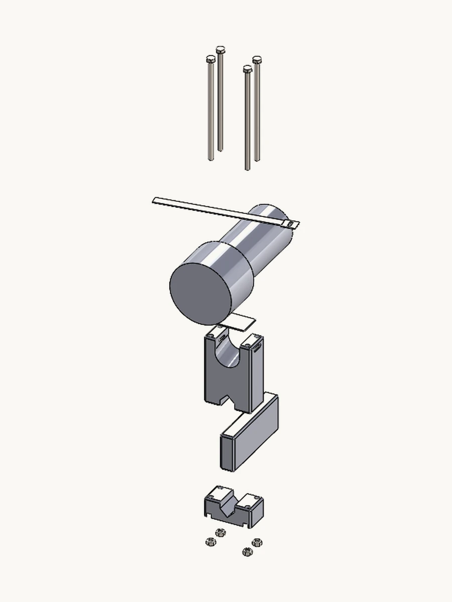
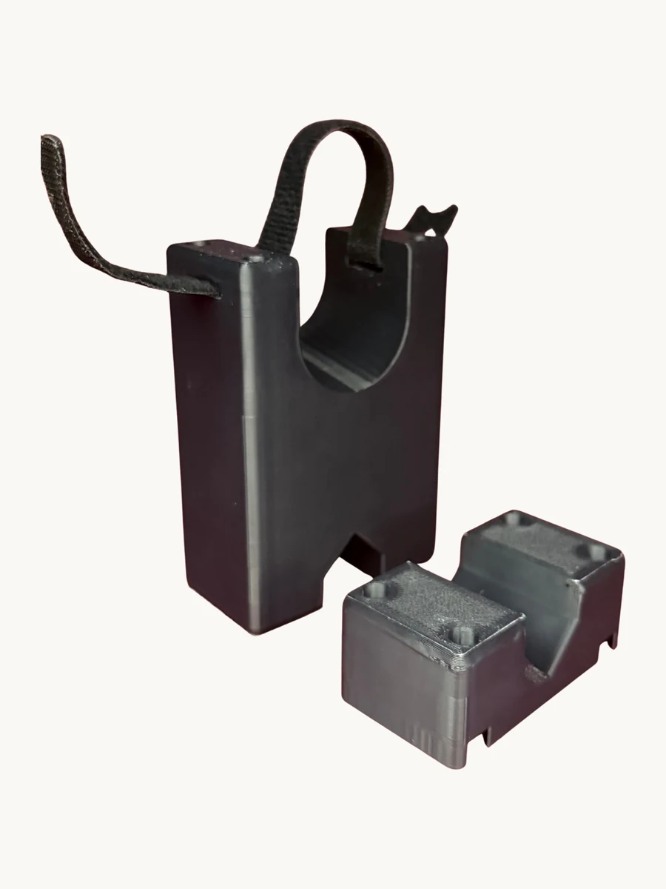
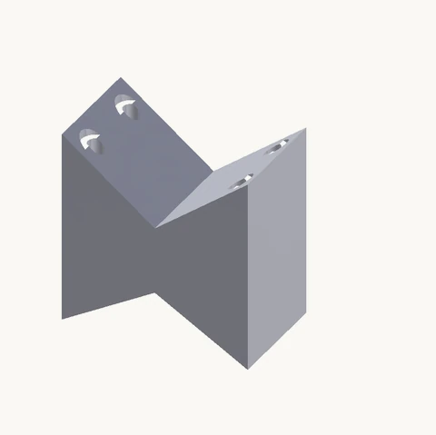
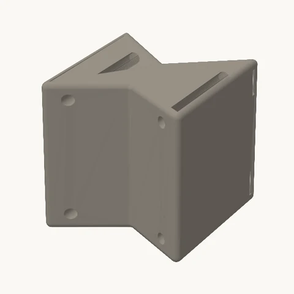
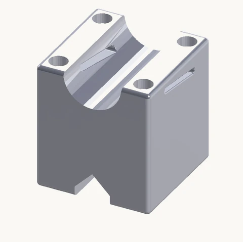
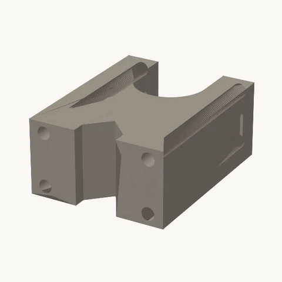
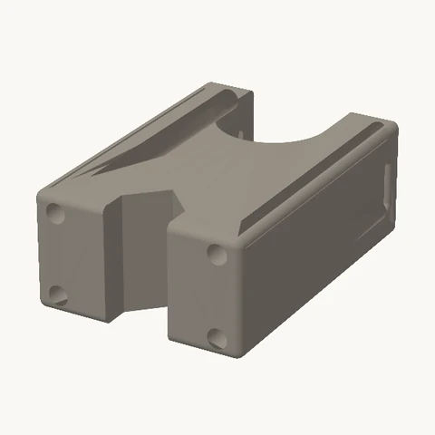
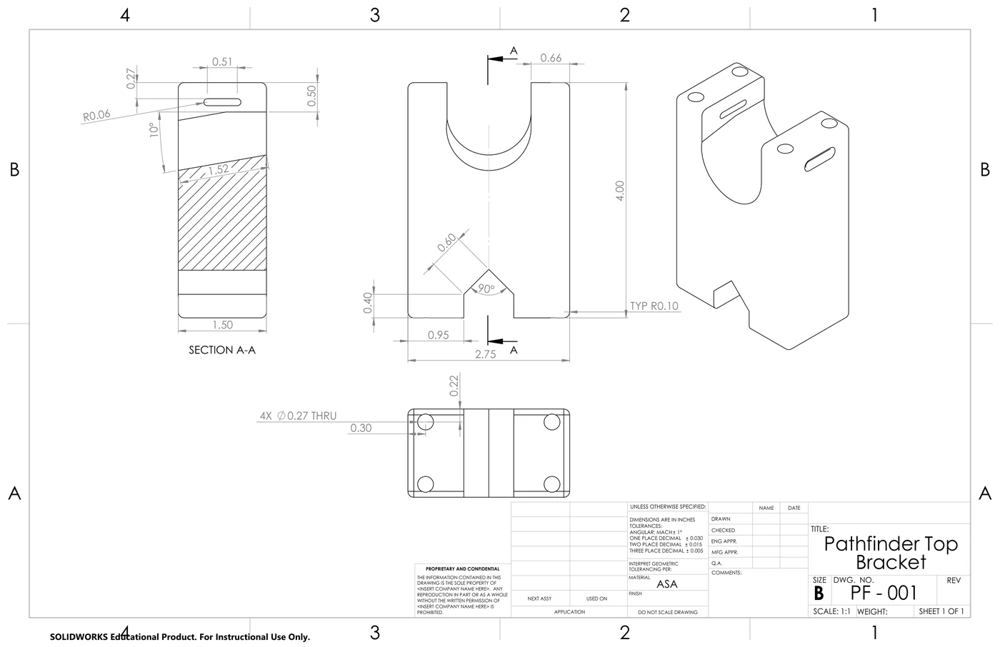
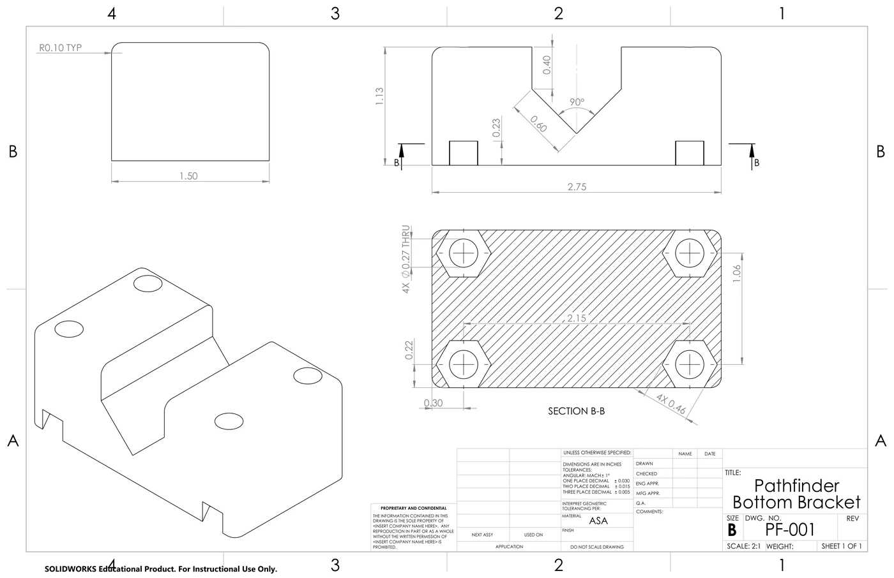
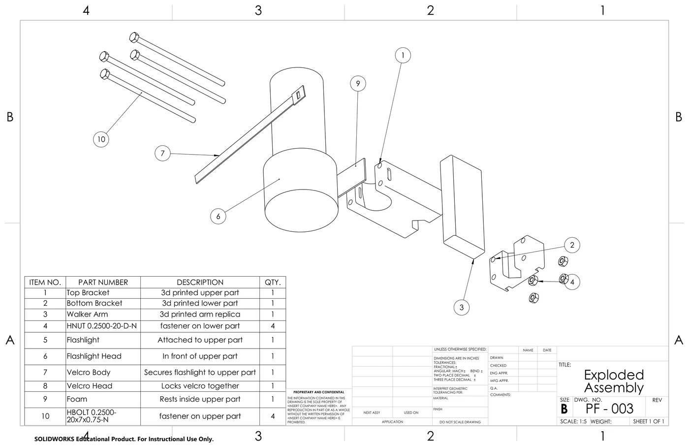

Pathfinder
A custom-fit LED lighting system for a walker, built for a legally blind user.
- Role
- Team lead, CAD lead
- Team
- 3 people, client-based project at Harvey Mudd
- When
- June – July 2026
- Tools
- SolidWorks, FDM 3D printing (ASA)

The problem
Who the user was, what they struggled with, and what the light needed to do. Two or three sentences.
What I did
- Led ideation and ran the CAD process in SolidWorks across four prototype iterations.
- Designed and 3D printed custom brackets to mount the lights to the walker frame, refining them for fit and durability.


What changed between iterations, and why? This is the part recruiters want to read.

v1
v2
v3
v4
Final
Drawings
Dimensioned part drawings and the assembly with its parts list. Click a drawing to open the full PDF.

Top bracket
Bottom bracket
Exploded assembly
Result
What the client got, how it performed, what you'd do differently.